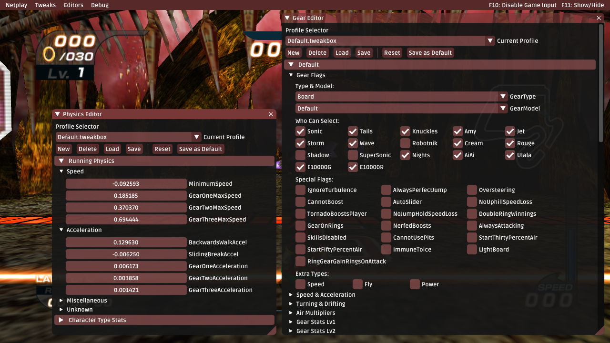
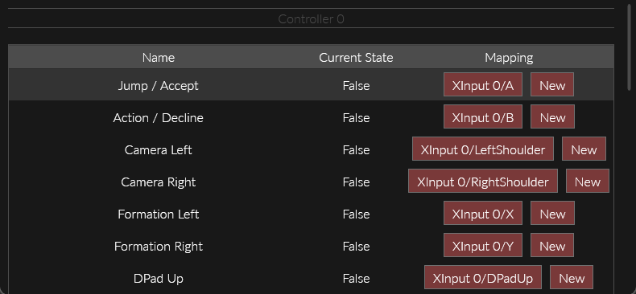

Sonic Riders

About
- Platform: PC
- Release Date: 2006
All in One Mod: Riders Tweakbox
Riders Tweakbox
- Summary: An all in one mod that does literally just about everything AND MORE.
- Status: Active Development (Slow)
- Features:
- Too many to list here. See wiki. Highlights below.
- Online Multiplayer: Fully featured with server browser, spectator, no port forward needed etc.
- Widescreen Support.
- Fixed Frame Pacing.
- Discord Rich Presence Support.
- Boot to Menu/Race.
- Inject Custom Music.
- Custom Texture Injection/Replacement incl. Animated Textures.
- Massively Improved Load & Startup Times.
- Massively Improved Performance (>5x !!).
- Lots of debug tools & file format editors.
- and many more...
Online Multiplayer:

Gear Editors:

Riders Hacking Tools (& Wiki)
Riders Hacking Wiki
- Summary: A wiki for all knowledge and tools, by yours truly.
- Release Date: 2021 Website
- Features:
- All game modding tools are hosted on this wiki.
- All modding knowledge is hosted on this wiki.
- Contains listing of all game files and their corresponding file formats.
- Contains listing of all game archives and files inside with corresponding names and formats.
- Contains listing of all tools.
Below are information on various tools present in the wiki/repo.
IndexTool
- Summary: Tool that recognises any known file format in the game and generates documentation for wiki.
- Tells you which tools to use for this file format.
- Very useful considering game has no file names inside archives.
RidersArchiveTool
- Summary: Extracts files from the game's archive format.
- Features fastest compressor/decompressor by yours truly.
- Used by just about every Sonic Riders mod.
RidersTextureArchiveTool
MenuLayoutToJson
GcaxDatInjector
- Summary: Can be used to edit sound effects in .DAT files in the GameCube version of Riders.
Riders SDK & Disassembly
Sewer56.SonicRiders
- Summary: Library containing low level code to mod the game as well as read/write the game's file formats.
- Release Date: 2020 Source Code
- All Riders PC mods and tools use this library under the hood.
_blockInputsHook = Functions.GetInputs.Hook(BlockGameInputsIfEnabled).Activate();
private int BlockGameInputsIfEnabled()
{
// Skips game controller input obtain function if condition is true.
if (!_isEnabled)
return _blockInputsHook.OriginalFunction();
return 0;
}
High level API like this, allows for easy access of various game internals.
Modern Controller Support
Riders Controller Hook
- Summary: Adds support for modern Game Controllers to Sonic Riders.
- Release Date: 2020 Source
- Adds support for remapping controllers.
- Adds support for controller hotplugging.
- Adds support for XInput (360) based controllers.
- Allows for deadzone adjustment, inverting axis etc.
- Restores ability to drift using triggers missing from PC version.
- Restores ability to control 3P/4P [missing from PC port].
- Provides an API for mods to inject their own inputs.
- and much more...

Discord Rich Presence
Rich Presence
- Summary: Presents your current play status on Discord.
- Release Date: 2020 Source
- Status: Deprecated. Superseded by Tweakbox.
- Features:
- Show your current activity on Discord.
- Supports multiplayer modes, including score tracking.
- Time elapsed syncs to stage timer.
Trick Text Translator
Trick Text Translator
- Summary: Creates custom trick names by translating coordinates of trick font sprites to ASCII and back.
- Release Date: Tool unreleased, source release only.
- Source Code: [Available in Riders SDK].
Prototype 0.931 Restoration
Prototype 0.931 Restoration
- Summary: Made debug executable of beta version work with files from retail game.
- Release Date: 2020 [Release Thread, Learn More Here].
- Creating this was a complicated process involving reverse engineering multiple archive formats and hacking around crashes in game code.
- Features:
- Partial Symbols (Function, Variable Names).
- Re-enabled a lot of debug functionality disabled in this build.
- A lot of unique bugs, glitches and other minor code features.

Riders PS2 Tools
- Summary: Tools that were used to create the prototype restoration.
- Release Date: 2020 [Source Code].
- A lot of code from this repo was moved to Riders SDK.
Startup Restriction Killer
Startup Restriction Killer
- Summary: Allows you to launch game from outside launcher, and multiple instances too.
- Release Date: 2019 [Source Code].
- Status: Deprecated. Superseded by Tweakbox.